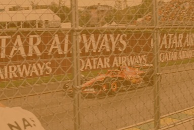
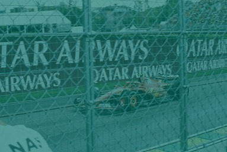
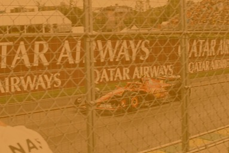
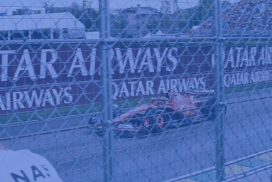
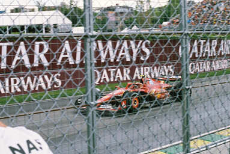

我们是飞扬宣传大使，是创意的引爆点！我们执笔运营，撰写文案，制作推文，塑造飞扬线上形象；我们妙手摄影，刻录每一帧高光瞬间。用推文传递风采，用镜头讲述故事——我们，是飞扬的最佳记录者！
张晓旺，部长
日常统筹协调部门各项事务、管理运营官方账号，同时时刻为团队成员加油打气，用热情与活力带动大家一起传递飞扬能量
莫志翔，副部长
日常负责影像内容创作全流程，从现场拍摄取材到后期剪辑包装，用镜头捕捉精彩瞬间，用画面讲述飞扬故事，持续精进视听语言，为社团打造富有感染力的视觉记忆点
张艺书，副部长
主要负责公众号等平台的推文制作，用细腻笔触与精巧排版传递飞扬温度，从选题构思到内容撰写，用心打磨每一篇推送，让文字成为连接社团与大家的温暖桥梁
推文制作
用文字与排版编织飞扬故事，负责公众号等平台的内容创作与视觉呈现。从选题策划、文案撰写到版式设计，精心打磨每一篇推送，让鲜活的活动瞬间与温暖的社团日常，通过细腻笔触触达每一位读者，成为连接社团与外界的情感纽带。
账号运营（B站 & QQ）
B站账号：影像内容的主阵地，负责视频策划、拍摄、剪辑与发布，用镜头捕捉社团高光时刻，制作富有感染力的视听作品，打造飞扬专属的视觉记忆点。
QQ平台：日常互动与信息传递的核心渠道，负责动态更新、活动预告与社群维护，及时传递社团资讯，拉近与成员的距离，让飞扬的活力时刻在线。
部门例会
既是技能课堂，也是温暖团建。例会中我们会和小萌新们亲切交流，快速拉近距离；同时系统传授摄影、视频剪辑、推文制作等专业技能，从基础操作到创意进阶，手把手带领大家成长，让每一位成员都能在实践中收获能力与归属感，共同为飞扬的视听传播注入新鲜力量。

胶片片基

感红光层

黄色滤光层
感蓝光层

紫外线滤光层

保护层